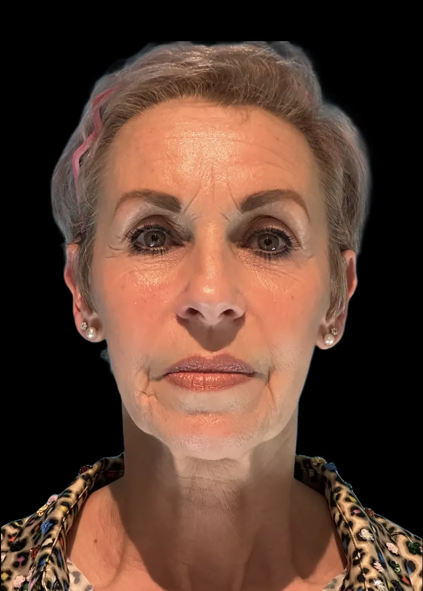
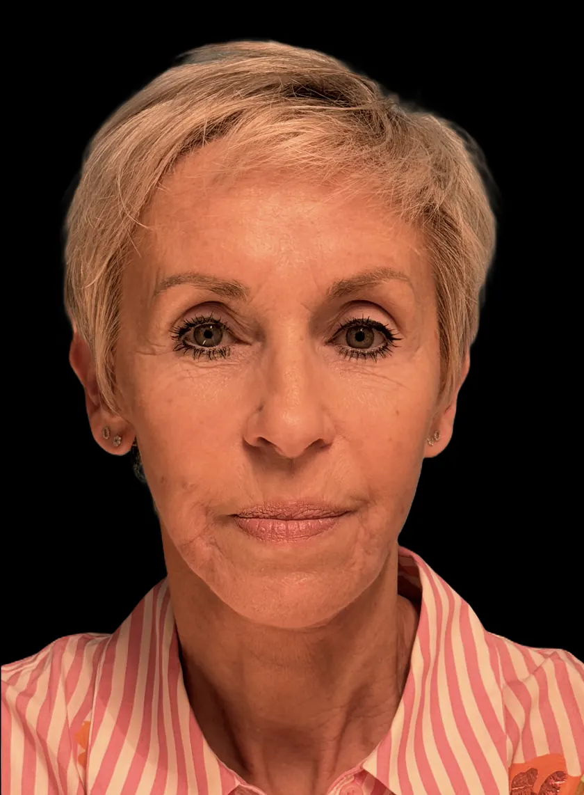

Avant 12 mois après
Lifting
Demander un devis
Lifting cervico-facial en plan profond
Améliore la ligne mandibulaire, les bajoues et le tiers moyen du visage en repositionnant les tissus mous descendus.
En savoir plus
Ce n'est pas une intervention dédiée au sillon mento-labial profond : sa correction nécessite souvent des gestes complémentaires, notamment des injections de produits de comblement.